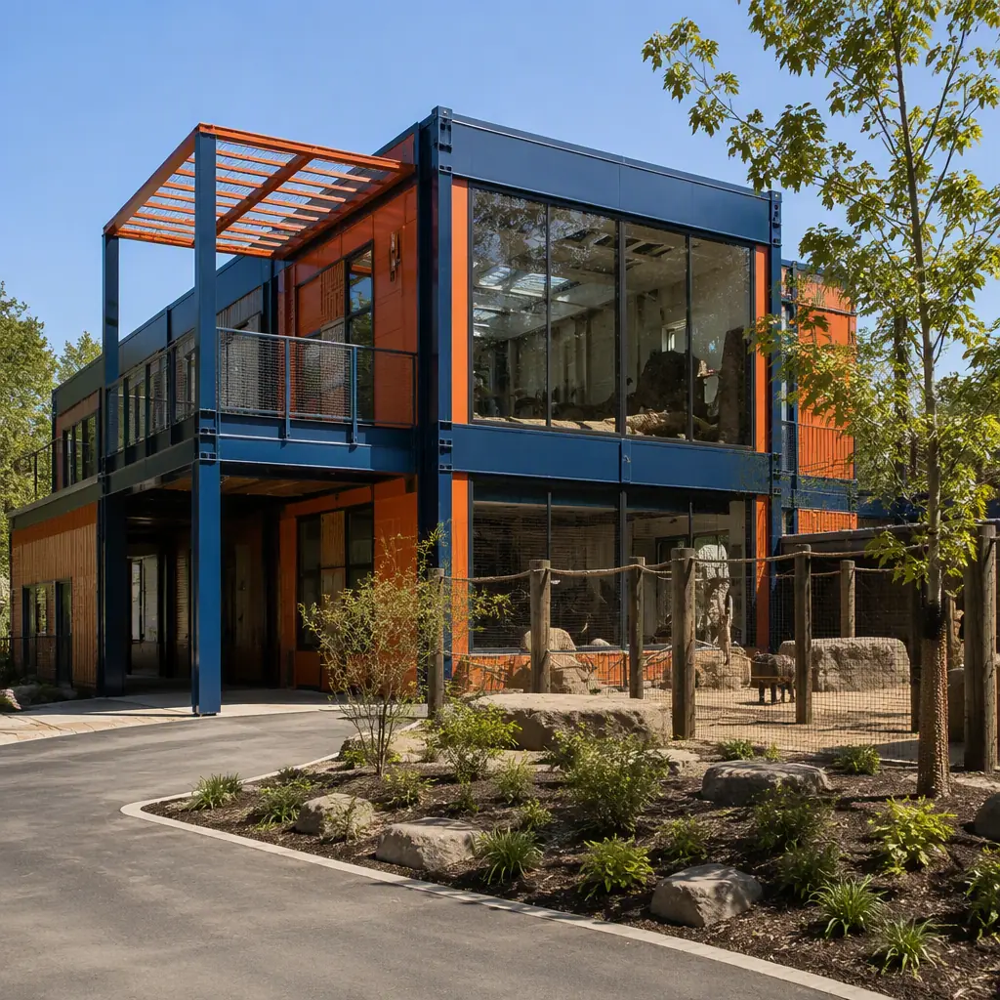
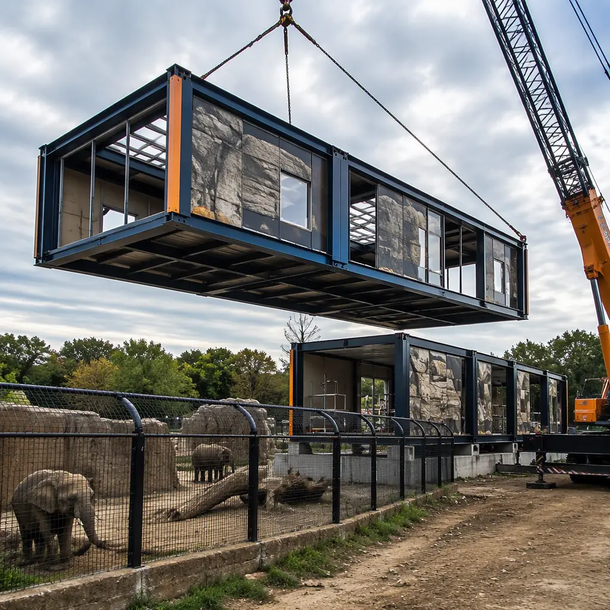
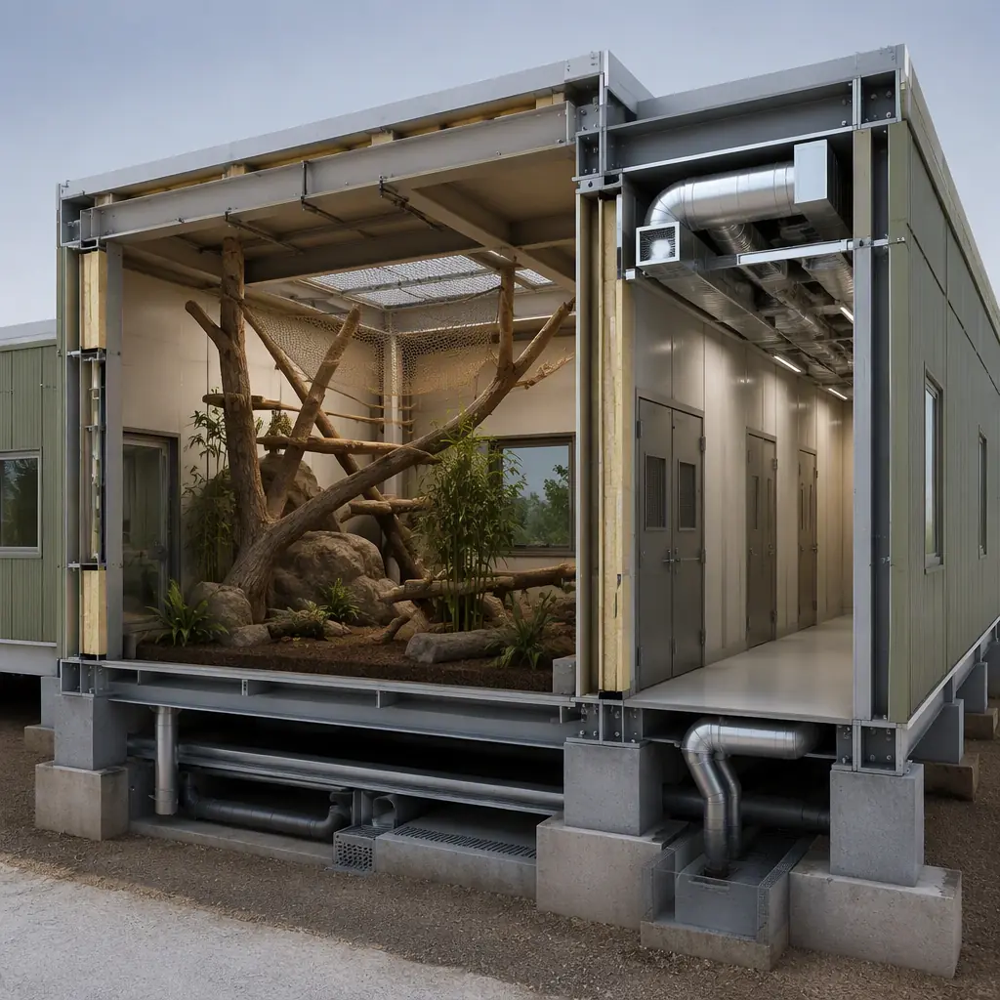
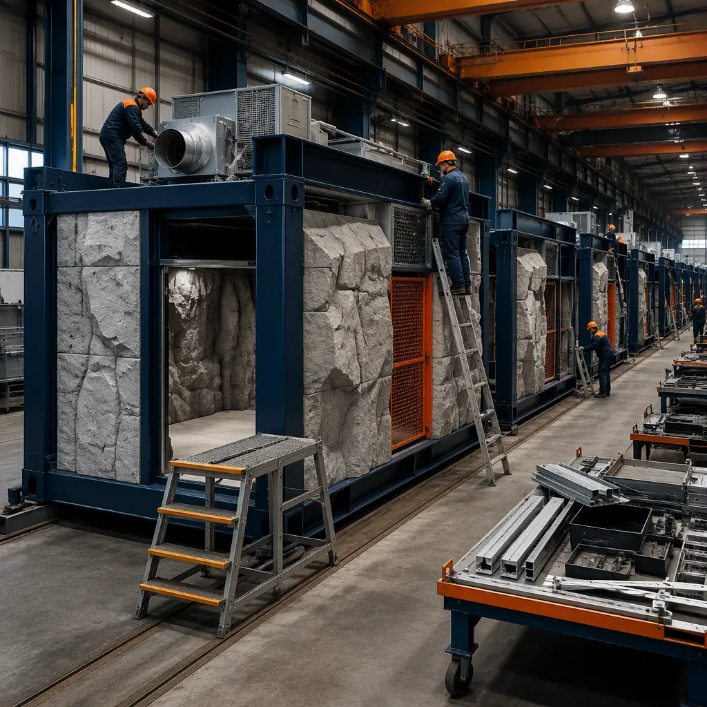

Zoos operate under a constraint few other building owners face: the occupants cannot be moved out while construction happens, and the occupants are worth more than the buildings. A primate house cannot be shut down for a year while its replacement is built on the same footprint, and a quarantine facility that is out of service during an outbreak is worse than no facility at all. Modular prefabricated construction fits live-animal operations because the building work happens in a factory while the zoo keeps operating, and the finished modules arrive ready to be set in place in a sequence that moves animals once, not twice. An 8,000 sq ft primate and reptile building, a 5,000 sq ft veterinary hospital, or a 3,000 sq ft quarantine unit can be designed, manufactured and delivered in 18–24 weeks — timed to the zoo's slow season — then commissioned in two to four weeks of keeper-directed handover. The same factory-delivery logic we document for modular botanical gardens and conservatories and modular veterinary clinics and animal hospitals applies across the zoo building program. This guide covers the zoo building program, species housing and habitat buildings, containment and biosecurity, veterinary and quarantine facilities, nutrition centers, visitor buildings, back-of-house operations, MEP for live-animal buildings, phased relocation, and cost structure.

What a Zoo Actually Builds
Behind the guest path, a zoo is a campus of specialized structures: species housing and habitat buildings, veterinary hospitals and quarantine wards, nutrition and food-prep centers, hay and feed storage, commissary and cold storage, keeper support buildings, maintenance shops, and the guest-facing program of entry buildings, restrooms, education centers and dining. What makes the program unusual is the split between highly serviced life-safety buildings — animal housing with dedicated HVAC zones, drainage and containment — and conventional support buildings that follow standard commercial construction. Both types benefit from factory production, but for different reasons: the life-safety buildings gain precision and tested systems, while the support buildings gain speed and the ability to be installed without disrupting animal operations. The campus logic follows the same phased-masterplan discipline we document for modular university academic buildings, where buildings arrive on a schedule coordinated around a live, always-moving institution.
Species Housing & Habitat Buildings
Animal housing is where modular delivery earns its keep. A primate building, for example, combines indoor dayrooms with climbing structures, night houses with individual sleeping dens, keeper access corridors, and a complex HVAC strategy — each species has a temperature, humidity and ventilation band, and the building must hold those bands even when a door opens to an outdoor yard. Factory-built modules arrive with the HVAC zones, drainage, security doors and keeper interlock systems installed and tested, which compresses the on-site work to module setting and yard tie-in. Reptile and amphibian buildings demand the tightest environmental control — day/night temperature cycling, humidity in the 60–80% range, and UV lighting systems — the same precision-environment discipline we document for modular clean rooms. Big cat and ungulate buildings emphasize containment: heavy-duty door systems, moat or barrier integration, and service corridors sized for keeper safety. Large-animal barns use clear-span module layouts with the same structural approach we document for modular agricultural buildings.

Containment, Biosecurity & Zoning
The most expensive mistake in zoo construction is a biosecurity failure, and it is almost always a design failure: shared air paths, shared drainage, or a missing physical barrier between animal groups. Modular planning treats biosecurity as a zoning problem solved in the factory. Each module group gets its own HVAC system or dedicated zones, negative-pressure isolation rooms exhaust separately from the main building, and drainage from animal areas is routed through disinfection chambers before it joins the site system. Keeper access follows a clean/dirty corridor logic — the same zoning principle used in modular GMP pharmaceutical facilities — with footbaths, dedicated boot rooms and direction-of-flow controls at every boundary. Because the containment walls, door interlocks and pressure monitoring are installed and tested in the factory, the zoo receives a building whose biosecurity envelope was verified before the first animal moves in, not discovered during commissioning.
Veterinary Hospitals & Quarantine Facilities
Zoo veterinary facilities combine human-hospital MEP density with animal-specific requirements: radiology and imaging suites, surgical suites sized for large animals, treatment rooms, pharmacy and lab spaces, and isolation wards with independent air handling. Modular delivery is a natural fit because these are exactly the MEP-dense, code-constrained buildings where factory production delivers the highest quality gain — the same logic that drives modular hospital construction. Quarantine is the highest-stakes building in the program: a 3,000 sq ft quarantine unit with four to six isolation stalls, its own HVAC with HEPA filtration, dedicated drainage disinfection, and a separate keeper entry can be manufactured entirely off-site and delivered as a self-contained module group. AZA-accredited institutions and USDA-licensed facilities plan quarantine capacity for 30–90 days per animal group, which means the building must be ready exactly when the animals arrive — a schedule commitment factory production can make with confidence.
Nutrition Centers, Food Prep & Cold Storage
Large zoos run a commissary operation that prepares hundreds of diets a day: produce, meat, browse, and specialized formulations for every species, stored and prepared under food-safety protocols. The nutrition center combines commercial kitchen space, walk-in coolers and freezers, a diet-prep room, and secure storage for feed and supplements. These are conventional food-service buildings with heavy MEP content — grease ducts, refrigeration, washdown areas — and they follow the same factory-built kitchen logic we document for modular restaurant construction. Hay and browse storage deserves its own mention: large-animal collections store hundreds of tons of hay, and the barn must manage dust, moisture and fire risk with high-bay clear-span construction and dedicated ventilation — the agricultural storage approach covered in our agricultural building guide.

Visitor Buildings — Entry, Restrooms, Education & Dining
The guest-facing program — entry and ticket buildings, restroom facilities, education centers, classrooms and dining venues — is the most conventional part of the zoo campus, but it is where visitors form their impression of the institution. These buildings follow standard commercial modular construction: entry buildings with ticketing and guest services, high-occupancy restroom modules with the same vandal-resistant wet-room engineering we document for prefabricated bathroom pods, education centers with classroom and exhibit space, and quick-service dining buildings built as factory-fitted kitchens. Because visitor buildings can be installed outside animal zones, they are also the easiest phase of a zoo master plan to deliver on an aggressive schedule — a zoo can open a new entry and dining complex for the summer season while animal housing proceeds on a slower, animal-safe timeline.
Back-of-House — Maintenance, Staff & Admin
Behind the scenes, zoos run the same support operation as any large campus: maintenance shops for vehicles, exhibits and life-support systems, keeper support buildings with locker rooms and break areas, and administration offices. These buildings are the most schedule-tolerant and the easiest wins for modular delivery — standard commercial modules manufactured while the zoo operates and set in place in a weekend. Staff facilities follow the standards we document for modular office buildings, and keeper support areas follow the shift-peak design logic of modular workforce housing. For zoos adding staff capacity during a master plan, back-of-house buildings make an ideal first phase: they can be installed and commissioned before any animal buildings arrive, giving the operations team room to prepare.
MEP for Live-Animal Buildings
The engineering that separates zoo buildings from ordinary construction is the life-safety and environmental content. HVAC must hold species-specific temperature and humidity bands with redundant systems — a chiller failure in a reptile house is an animal-welfare emergency, so factory-built modules carry backup and alarm systems installed and tested. Electrical content includes generator-backed life-support circuits for critical animal areas, the same redundancy logic we document for modular substations and electrical buildings. Drainage from animal areas requires disinfection or solids-separation pre-treatment before entering municipal systems. Fire suppression in high-occupancy guest buildings and kitchens follows the full compliance framework in our modular construction fire safety guide, and the site-wide coordination of power, water and utility corridors is managed on the same digital model we document in modular BIM and digital workflow.
Phasing Around Live Animals
The defining difference between zoo construction and ordinary construction is the relocation sequence. Every animal move is a risk event, so the building program is phased around them: the new housing module group is completed and commissioned first, animals move into the new building once, and the old building is demolished or repurposed only after the move is verified. Because modules are factory-built, the construction activity at the zoo during an animal move shrinks to crane setting and tie-in — a matter of days rather than months. The critical-path discipline for coordinating factory slots, module delivery and animal moves is exactly the scheduling methodology we document in modular construction scheduling, and the crane and transport engineering follows our modular crane logistics guide and modular transportation logistics guide. For institutions expanding within an existing footprint — the most common zoo scenario — the phased approach is documented in modular additions and expansions.
Cost Structure — Modular vs. Conventional Zoo Buildings
| Zoo Building Program | Conventional | Modular |
|---|---|---|
| Species housing — primate/reptile (8,000 sq ft) | $2.9–4.4M / 12–16 months | $2.3–3.5M / 18–24 weeks |
| Veterinary hospital (5,000 sq ft) | $3.1–4.6M / 12–16 months | $2.5–3.7M / 20–26 weeks |
| Quarantine & isolation unit (3,000 sq ft) | $1.4–2.1M / 9–12 months | $1.1–1.7M / 16–20 weeks |
| Nutrition center & cold storage (6,000 sq ft) | $1.8–2.7M / 10–14 months | $1.5–2.2M / 16–22 weeks |
The 15–20% capital saving is real, but the decisive number for zoos is the risk reduction: buildings whose biosecurity and life-support systems were tested in the factory, delivered on a schedule that moves animals exactly once. For the full cost methodology, see our 2026 modular construction cost guide.

Is Modular Right for Your Zoo?
Modular delivery creates the strongest value for zoos replacing aging housing or veterinary facilities within an operating campus, institutions expanding capacity under AZA or USDA timelines, quarantine capacity that must be operational on a fixed date, and multi-facility organizations — zoos, sanctuaries and wildlife parks — that repeat the same building program across locations, the franchise-rollout economics we document in modular franchise and chain rollout construction. For temporary capacity — seasonal animal housing, transport holding or event space — the same modules can be deployed, relocated and stored between seasons, following the approach in modular temporary and relocatable facilities.
Planning a zoo or wildlife facility building program? Request our animal-facility documentation package — species housing and quarantine module specifications, biosecurity zoning drawings and phased relocation schedules. Contact the MODURA engineering team.